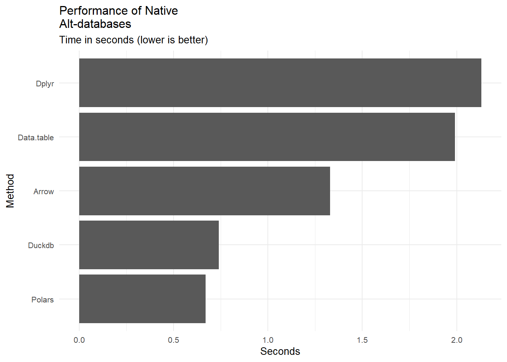
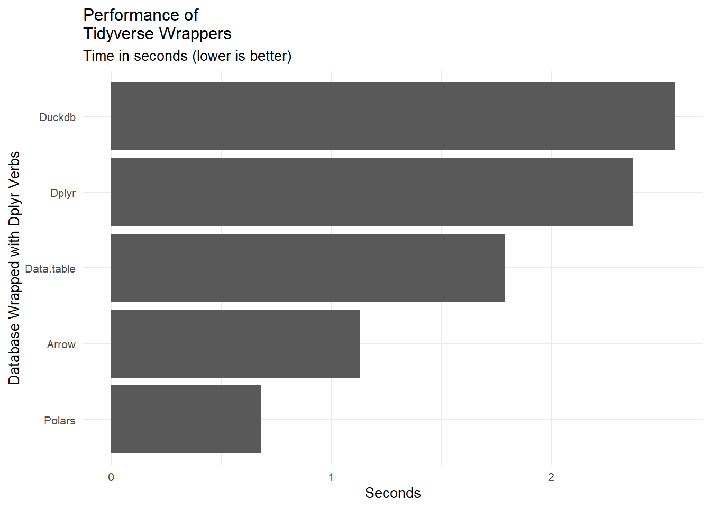
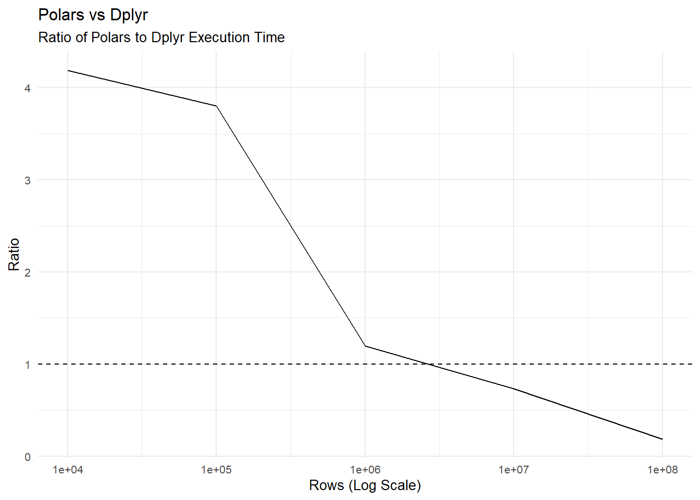
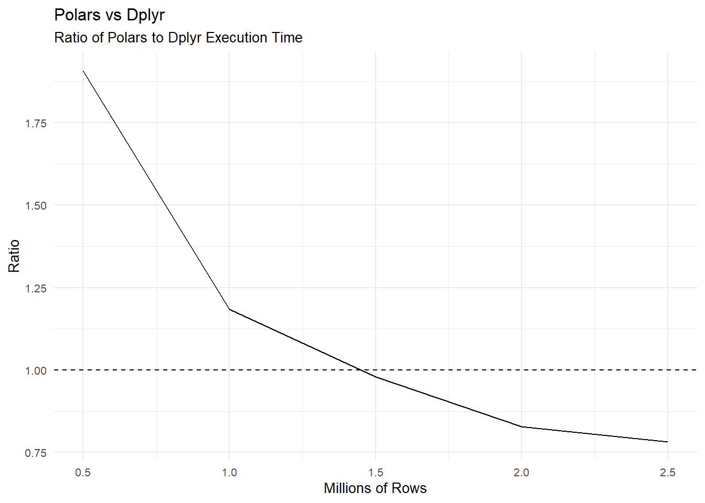

# base R
do_base <- function(df) {
agg_lines <- aggregate(temp ~ city, data = df,
FUN = function(x) c(avg=mean(x),high=max(x),low=min(x)))
# convert matrix column to data frame columns
cbind(city=agg_lines$city,as.data.frame(agg_lines$temp))
}The Truth About Tidy Wrappers
Are Tidyverse wrappers around powerful database engines really worth it?
These are the packages we will need for this analysis.
library(tidyverse)
library(data.table)
library(dtplyr)
library(duckdb)
library(duckplyr)
library(polars)
library(tidypolars)
library(arrow)
library(tictoc)
library(microbenchmark)
library(gt)The Tidyverse
I love the Tidyverse from Posit.co. The biggest evolution of the R language ecosystem since its inception was the introduction of dplyr and, subsequently, dozens of related packages. dplyr established what is, in effect, a new vernacular for manipulating data frames that is supremely readable. This is not welcome by everyone as verbosity is preferred in the Tidyverse over conciseness. Consider two snippets of code that summarize a column of numbers, the first in base R and the second using dplyr.
# dplyr
do_dplyr <- function(df) {
df |>
as.data.frame() |>
group_by(city) |>
summarize(high = max(temp), low = min(temp), avg = mean(temp))
}The first example is hard to decipher while the second is quite understandable without even knowing what the purpose of the function is. As it happens, dplyr is also usually faster than base R by a fair amount.
The Need for Speed
As we start working with larger and larger datasets, the basic tools of the tidyverse start to look a little slow. In the last few years several packages more suited to large datasets have emerged. Some of these are column, rather than row, oriented. Some use parallel processing. Some are vector optimized. Speedy databases that have made their way into the R ecosystem are data.table, arrow, polars and duckdb. All of these are available for Python as well. Each of these carries with it its own interface and learning curve. duckdb, for example is a dialect of SQL, an entirely different language so our dplyr code above has to look like this in SQL:
result <- dbGetQuery(
con,
"SELECT city, AVG(temp) as avg, MIN(temp) as low, MAX(temp) as high FROM duck_df GROUP BY city")It’s pretty readable but if you don’t know the lingo, translating will slow you down. Fear not! Help is at hand. Everyone of these database packages has a dplyr vernacular wrapper. This is a huge convenience. You can write the readable dplyr code and it just works. Switching between and testing all of these databases requires only minor changes in your code.
Note
Future code snippets in this article are hidden by default. Click on the “Code” button wherever you see it to make source code visible.
When looking at these alt-databases you may be tempted to simply ask “which is fastest?” This is not a simple question. The answer will depend on the size of the dataset, the nature of the manipulations, and the hardware you are using. You can get a sense of the relative speeds by looking at these comprehensive benchmarks.
If you want to continue to use the tidyverse vernacular, the question changes. It’s not “which is fastest,” but “which is fastest using the dplyr syntax?” The answer, as it turns out, is very different for the second question.
The dplyr wrappers are not a free lunch. There are two sources of overhead that mean the dplyr code should be slightly slower than using the native interface. First, the dataset, which might start out as a typical R data frame, must be converted into the target database format. Second, some time must be taken to convert the dplyr code to the target database code. Obviously, if your dataset is already in the file format of the database package, the first issue goes away.
In this experiment we will address three questions.
- How much faster (if at all) are the “alt-database” packages than the Tidyverse dplyr package. We use the native data frame format throughout the pipeline.
- How much of a performance hit do we take if we use the Tidyverse wrappers to analyze alt-database data sets, still using the native format.
- Suppose we want to work with Tidyverse R data frames (e.g. tibbles). Do the all-database engines still give us a speed benefit if we include the time to convert tibbles into an alt-database format before doing typical manipulations.
The inspiration for this project came from the “Billion Row Challenge,” proposed by Gunnar Morling, to see how fast a Java program can aggregate one billion rows of data. Here, we are not interested in absolute speed, but relative speed among different approaches. 100 million rows should be reasonable for a typical laptop setup. This works out to be a 1.5 GB dataset. We will handle the dataset as one object. If we were optimizing for speed, chopping the data into chunks for parallel processing would be something to try (but see the discussion of polars, below).
As a cautionary note, the manipulations we are doing, grouping and summarizing, may or may not show off any particular approach to its best advantage. Your mileage may vary. Feel free to quibble.
Make the Data Set
Let’s start by creating the dummy data set, a list of temperature observations for World cities. The core will be actual mean annual temperature for about 400 cities from Wikipedia. Save this data for re-use. Then we randomly add observations around the mean, up to the desired size, 100 million in this case. It’s all fake data, anyway. First, scrape the cities and temperatures from Wikipedia. Be aware that Wikipedia page layouts change frequently so what worked today (March, 2024) might not work tomorrow.
Code
if (fs::file_exists('data/weather_stations.csv')){
city_table <- read_csv("data/weather_stations.csv",
show_col_types = FALSE)
} else {
# retrieve table from https://en.wikipedia.org/wiki/List_of_cities_by_average_temperature using rvest package
continents <- ""
url <-
"https://en.wikipedia.org/wiki/List_of_cities_by_average_temperature"
webpage <- read_html(url)
city_table <- html_nodes(webpage, "table") %>%
html_table(fill = TRUE) %>%
bind_rows() |>
as_tibble() |>
select(-Ref.) |>
# remove all numbers in parentheses from all columns using across() and str_remove()
mutate(across(everything(), \(x) str_remove_all(x, "\\(.*\\)"))) |>
# mutate to numeric all columns except City and Country
mutate(across(-c(City, Country), as.numeric)) |>
# remove all rows with NA values
drop_na()
# write the table to a csv file
write_csv(city_table, "data/weather_stations.csv")
}Its easy to generate 100 million random observations based on the city name and average temperature. You don’t need to use real city names, but it’s fun to do so. You could make up anything.
Code
# Define function to generate weather station data
generate_observations <- function(n){
rownum <- sample(nrow(city_table), n, replace = TRUE)
city <- city_table$City[rownum]
obs_temp <- rnorm(n, mean = city_table$Year[rownum], sd = 10)
return(tibble(city = city, temp = round(obs_temp, 1)))
}
tidy_df <- generate_observations(num_records)Now we can process this data set using each of the database packages using both the native interface and the dplyr wrapper. We want to know which database is fastest and what the performance loss is from using the wrapper. First let’s establish that base R is not in the running by comparing it to the default of dplyr, using the code already shown above and a subset of the data.
Code
#quicky function to clean up benchmark results. Show only median seconds to process.
qbench <- function(mb_result,round=2){
# extract the median time in seconds
mb_result |>
group_by(expr) |>
summarize(seconds = round(median(time)/1e9,round))
}
microbenchmark(do_base(tidy_df[1:1e7,]),do_dplyr(tidy_df[1:1e7,]),times = 3,unit = "seconds") |>
qbench() |>
gt()| expr | seconds |
|---|---|
| do_base(tidy_df[1:1e+07, ]) | 3.20 |
| do_dplyr(tidy_df[1:1e+07, ]) | 0.43 |
dplyr is much faster than base R. How does that stack up against the competition?
data.table
First up is the venerable data.table and the Tidyverse companion dtplyr. This has been around a long time and is the R community’s first choice when speed is needed. The key to data.table’s speed is adding a key to the data set. This makes grouping and rowwise lookups more efficient. The dtplyr package wraps it with dplyr syntax. If we are working with data.table objects throughout our workflow we an also see the performance effect of code translation when using dplyr verbs.
In the benchmark timings, the first row includes the time taken to convert a tibble to a data.table and then using the dplyr verbs from dtplyr. The second row is the time taken to process a data.table natively. The third row is the time taken to run the dtplyr code on a native data.table. Finally, as a control, we see the time taken to run the dplyr code on a tibble in the fourth row.
Note we are using “lazy” evalutation, which is another differentiator for data.table. We accumulate all the query operations and run them only when collect() is called.
Code
do_data.table <- function(df = tidy_df, force_tidy = FALSE) {
if ("data.table" %in% class(df)) {
if (!force_tidy) {
df[, .(
high = max(temp),
low = min(temp),
avg = mean(temp)
), by = city] |>
collect()
} else {
df %>%
group_by(city) |>
summarize(
high = max(temp),
low = min(temp),
avg = mean(temp)
) |> collect()
}
} else{
df |>
as.data.table() |>
lazy_dt(immutable = FALSE) |>
group_by(city) |>
summarize(
high = max(temp),
low = min(temp),
avg = mean(temp)
) |>
collect()
}
}
DT_df <- as.data.table(tidy_df,key = "city") |> lazy_dt(immutable = FALSE)
bm_dt <-microbenchmark(do_data.table(tidy_df),
do_data.table(DT_df,force_tidy = FALSE),
do_data.table(DT_df,force_tidy = TRUE),
do_dplyr(tidy_df),times= 3,unit="seconds")
qbench(bm_dt) |> gt()| expr | seconds |
|---|---|
| do_data.table(tidy_df) | 3.71 |
| do_data.table(DT_df, force_tidy = FALSE) | 1.72 |
| do_data.table(DT_df, force_tidy = TRUE) | 1.79 |
| do_dplyr(tidy_df) | 2.37 |
There is slight overhead in translating the dplyr syntax to data.table but the slowdown really comes from converting the data frame to a data.table object as shown in the first row. If you do that every time, data.table is slower than dplyr. Try to convert your dataset only once and then work can continue to be on the data.table.
Arrow
Next up is Arrow. This is a columnar database from Apache. It uses a matching file format called parquet. This is a very efficient way to store data and is designed from the ground up to handle datasets larger than can fit in memory (but that is beyond the scope of this analysis). What’s nice is that the arrow R package already has a dplyr interface as it’s native interface! There is no separate package to translate dplyr verbs to a different arrow syntax.
Code
do_arrow <- function(df) {
if ("ArrowObject" %in% class(df)) {
df |>
group_by(city) |>
summarize(
high = max(temp),
low = min(temp),
avg = mean(temp)
) |>
collect()
} else {
df |>
arrow_table() |>
group_by(city) |>
summarize(
high = max(temp),
low = min(temp),
avg = mean(temp)
) |>
collect()
}
}
arrow_df <- tidy_df |> arrow_table()
bm_arrow <- microbenchmark(do_arrow(arrow_df),
do_arrow(tidy_df),
times = 1)
qbench(bm_arrow) |> gt()| expr | seconds |
|---|---|
| do_arrow(arrow_df) | 1.13 |
| do_arrow(tidy_df) | 3.75 |
We see a nice speedup over the previous methods although only when we start out in the arrow format. The overhead of converting the data frame to an arrow table is significant. So if you want to use arrow you’ll be right at home with the dplyr syntax but you should store and retrieve your data in native the arrow and parquet formats.
Polars
Moving on to a database that’s made a real splash in the Python community, polars. There is an R version, although it’s not on CRAN so you have to install it from here. The arrow companion is here. This is pretty new so it’s a work in progress. This package is a tremendous work but coverage of dplyr verbs is not 100%. The syntax of the native version in R is “pythonic,” so it prefers object methods over functions. It will be familiar to Python folks but R-only users can be very grateful for arrow. Once again the main time drag is converting to a polars data frame.
There is a great Polars cookbook by Damien Dotta for R users here which shows many side-by-side comparisons of dplyr and polars syntax. I urge you to refer to it for help with translating your code into native polars if you choose to go that route.
Polars uses the same columnar format as Arrow, but Polars has a secret weapon in that it does parallel processing by default. This is a big advantage when working with large data sets. Setup time for multi-threading is non-trivial so it really only shines on large data sets. Don’t worry. It all happens in the background. You don’t have to lift a finger.
Code
do_polars <- function(df = tidy_df, force_tidy = FALSE) {
if ("tbl" %in% class(df)) {
result <- df |>
as_polars_df() %>%
group_by(city) |>
summarize(
high = max(temp),
low = min(temp),
avg = mean(temp)
) |>
arrange(city)
return(result)
}
if (force_tidy) {
result <- df |>
as_polars_df() %>%
group_by(city) |>
summarize(
high = max(temp),
low = min(temp),
avg = mean(temp)
) |>
arrange(city)
return(result)
}
result <- df$group_by("city")$agg(
pl$col("temp")$sum()$alias("avg"),
pl$col("temp")$min()$alias("low"),
pl$col("temp")$max()$alias("high")
)
if (class(df) == "RPolarsLazyFrame") {
return(collect(result))
} else {
return(result)
}
}
polars_df <- tidy_df %>% as_polars_df()
# try lazy frame, too!
polars_lazy <- tidy_df %>% as_polars_lf()
bm_polars <- microbenchmark(do_polars(tidy_df),
do_polars(polars_df),
do_polars(polars_lazy),
do_polars(polars_df,force_tidy = TRUE),
times = 1, unit="seconds")
qbench(bm_polars) |> gt()| expr | seconds |
|---|---|
| do_polars(tidy_df) | 3.53 |
| do_polars(polars_df) | 0.68 |
| do_polars(polars_lazy) | 0.65 |
| do_polars(polars_df, force_tidy = TRUE) | 0.68 |
Pretty speedy! We’ve halved the time shown by arrow. Not only that, the performance of the tidypolars wrapper is great! We take only a tiny performance hit. Again, the overhead in converting an R data frame to polars is considerable. We are much better off if we start out with a polars data frame or stay in that format after converting once. If you want to use polars end-to-end, the file format that matches the in-memory structure of a polars data frame is the Apache parquet format also contained in the arrow package. There are no read/write functions in tidypolars so to read and write parquet files with polars, use the pl_read_parquet() function and <data frame>$write_parquet method from the polars package.
Note the use inclusion of a ‘lazy’ data frame in the test. Delaying query execution until all operations have been planned speeds things up a wee bit.
duckDB
Our final contender is duckdb with duckplyr. This is a relational database that supports “Structured Query Language” (SQL). SQL is easy to read but very different from R. Also, you first establish a connection to the database and work with the connection, not the data frame. duckplyr to the rescue. The speed boost comes from a columnar-vectorized query execution engine.
Code
do_duckdb <- function(df = tidy_df, use_tidy = TRUE) {
# duckdb_register(con, "duck_df",overwrite = TRUE, orig_df)
if (use_tidy) {
if ("duckplyr_df" %in% class(df)) {
# df was converted outside of function
result <- df |>
group_by(city) |>
summarize(
high = max(temp),
low = min(temp),
avg = mean(temp)
)
return(result)
} else {
# convert df to duck right now
result <- as_duckplyr_df(df) |>
group_by(city) |>
summarize(
high = max(temp),
low = min(temp),
avg = mean(temp)
)
return(result)
}
} else {
con <- dbConnect(duckdb::duckdb())
# use global tidy_df so it doesn't matter what df was fed to function
duckdb_register(con, "duck_df", overwrite = TRUE, tidy_df)
# achieve the same result with dbGetQuery
result <- dbGetQuery(
con,
"SELECT city, AVG(temp) as avg, MIN(temp) as low, MAX(temp) as high FROM duck_df GROUP BY city"
)
result
dbDisconnect(con, shutdown = TRUE)
rm(con)
}
return(result)
}
duck_df <- as_duckplyr_df(tidy_df)
bm_duckdb <- microbenchmark(do_duckdb(tidy_df,use_tidy = TRUE),
do_duckdb(duck_df,use_tidy = TRUE),
do_duckdb(duck_df,use_tidy = FALSE),
times = 1, unit="seconds")
qbench(bm_duckdb) |> gt()| expr | seconds |
|---|---|
| do_duckdb(tidy_df, use_tidy = TRUE) | 2.25 |
| do_duckdb(duck_df, use_tidy = TRUE) | 2.56 |
| do_duckdb(duck_df, use_tidy = FALSE) | 0.75 |
So this is interesting. Converting to a duckdb object adds essentially no overhead but the using the tidy vernacular is far slower than native. I suspect the internals of opening and closing the database connection are to blame. duckdb is competitive with polars but only in native mode. If speeding up your execution times is the priority, I cannot recommend the duckplyr wrapper. Brush up on your SQL chops, instead.
Conclusion
Before drawing any conclusions, let’s throw out a couple caveats. The summary statistics we are calculating are very simple. If you are doing something more complex, the results may be different. I urge you do to your own tests. Further, the data set is all in memory. If you are working with data on disk, the results may be different. Coverage of the Tidyverse is not complete for all these wrappers. Some of your data wrangling pipelines may not work.
As a general statement, the process of converting a standard R data frame to the format used by any of these alt-database engines is significant. You should make the conversion once in your data manipulation pipeline, then stay in the more efficient format until it’s time to present the results with something like ggplot.
Now let’s summarize alt-database engines the way you would typically see them benchmarked, using their native interfaces and data frame formats.
Code
bm <- rbind(bm_dt, bm_arrow, bm_polars, bm_duckdb)
native_exprs <- c("do_dplyr(tidy_df)","do_data.table(DT_df, force_tidy = FALSE)","do_arrow(arrow_df)",
"do_polars(polars_lazy)","do_duckdb(duck_df, use_tidy = FALSE)")
bm |> qbench() |>
filter(expr %in% native_exprs) |>
mutate(method = str_extract(expr,"do_.*\\(") |> str_remove("do_") |> str_remove("\\(") |> str_to_title()) |>
ggplot(aes(x = fct_reorder(method,seconds), y = seconds)) + geom_col() + coord_flip() +
labs(title = "Performance of Native\nAlt-databases",
subtitle = "Time in seconds (lower is better)",
x = "Method", y = "Seconds") +
theme_minimal() +
theme(text = element_text(size = 10))
It looks like both duckdb and polars offer significant speed advantages over dplyr but, as mentioned at the beginning, there is more to the story for a tidyverse user.
Since this post is for people who are interested in speeding up R database operations AND who prefer using Tidyverse syntax, let’s summarize the performance of the four contenders using their Tidyverse wrappers around the native data frame formats. duckdb is an odd case in that you can’t avoid the translation costs from R to duckdb format if you want to use the duckplyr wrapper. Remember, this is not showing which database is fastest. It is showing which database is fastest when using Tidyverse syntax.
Code
bm_tidy_exprs <- c(
'do_dplyr(tidy_df)',
'do_data.table(DT_df, force_tidy = TRUE)',
'do_arrow(arrow_df)',
'do_polars(polars_df, force_tidy = TRUE)',
'do_duckdb(duck_df, use_tidy = TRUE)'
)
bm |> qbench() |>
filter(expr %in% bm_tidy_exprs) |>
mutate(method = str_extract(expr,"do_.*\\(") |> str_remove("do_") |> str_remove("\\(") |> str_to_title()) |>
ggplot(aes(x = fct_reorder(method,seconds), y = seconds)) + geom_col() + coord_flip() +
labs(title = "Performance of\nTidyverse Wrappers",
subtitle = "Time in seconds (lower is better)",
x = "Database Wrapped with Dplyr Verbs", y = "Seconds") +
theme_minimal() +
theme(text = element_text(size = 10))
The clear winner is polars. While both polars and duckdb are competitive in native mode, the tidyverse wrapper for duckdb is a performance killer. To get the most benefit from polars you should read and write your data files in parquet format and only convert polars objects with as_tibble() when you are ready to do some plotting or other non-database operations.
Should you always use an alt-database?
All of these databases are optimized for certain things but they all come with overhead. In the case of polars the parallel processing and lazy evaluation provide the speed advantage over dplyr but it does some behind-the-scenes setup to run and that adds time. On small datasets it’s not worth it. At what point does the dataset size make using polars faster than dplyr? Let’s find out.
Code
row_subsets <- 10^(4:8)
sub_df <- function(df){
df |> group_by(city) |>
summarize(
high = max(temp),
low = min(temp),
avg = mean(temp)
) |>
collect()
}
compare_dplry_to_polars <- function(rows,times=1){
microbenchmark(sub_df(head(tidy_df,rows)),
sub_df(head(polars_lazy,rows)),
times=times,unit="seconds") |>
qbench(round = Inf) |>
# as_tibble() |>
mutate(rows = rows,.before = "seconds") |>
mutate(method = str_remove(expr,"sub_df\\(head\\(") |>
str_remove(", rows\\)\\)"),.before = "rows") |>
select(method,rows,seconds) |>
pivot_wider(names_from = method,values_from = seconds) |>
mutate(ratio = polars_lazy / tidy_df)
}
get_size <- function(rows){
tibble(rows = rows, data_size = format(object.size(head(tidy_df,rows)),units="MB"))
}
bm_size <- row_subsets |> map(compare_dplry_to_polars) |> bind_rows()
bm_size |> ggplot(aes(x = rows, y = ratio)) + geom_line() +
labs(title = "Polars vs Dplyr",
subtitle = "Ratio of Polars to Dplyr Execution Time",
x = "Rows (Log Scale)", y = "Ratio") +
geom_hline(yintercept = 1, linetype = "dashed") +
scale_x_log10(n.breaks = length(row_subsets)) +
theme_minimal() +
theme(text = element_text(size = 10))
Let’s zoom in on the region where the crossover occurs.
Code
row_subsets_2 <- seq(from=5,to=25,by=5)*1e5
bm_size_2 <- row_subsets_2 |> map(compare_dplry_to_polars,times=10) |> bind_rows()
bm_size_2 |> ggplot(aes(x = rows/1e6, y = ratio)) + geom_line() +
labs(title = "Polars vs Dplyr",
subtitle = "Ratio of Polars to Dplyr Execution Time",
x = "Millions of Rows", y = "Ratio") +
geom_hline(yintercept = 1, linetype = "dashed") +
theme_minimal() +
theme(text = element_text(size = 10))
It looks like the crossover point, where polars becomes a better choice than dplyr with this dataset, is between 1 and 1.5 million rows. This is a rough estimate and will depend on a lot of factors. The dataset we are using has only two columns. The geometry of your data will certainly be different so it may also be helpful to look at the size of the dataset. Here it seems that we should prefer polars if our dataset is larger than around 23MB.
Code
obj_sizes_2 <- row_subsets_2 |> map(get_size) |> bind_rows()
bm_size_3 <- bm_size_2 |> left_join(obj_sizes_2,by="rows")
bm_size_3 |> gt() |>
fmt_number(columns = 1,use_seps = TRUE,decimals = 0) |>
fmt_number(columns = 2:4,use_seps = TRUE,decimals = 2)| rows | tidy_df | polars_lazy | ratio | data_size |
|---|---|---|---|---|
| 500,000 | 0.02 | 0.05 | 2.10 | 7.7 Mb |
| 1,000,000 | 0.04 | 0.04 | 1.06 | 15.3 Mb |
| 1,500,000 | 0.06 | 0.05 | 0.97 | 22.9 Mb |
| 2,000,000 | 0.07 | 0.07 | 0.91 | 30.5 Mb |
| 2,500,000 | 0.09 | 0.09 | 0.90 | 38.2 Mb |
There are infinite combinations of hardware, data structures and processing pipelines possible and you may find a different result in your work. polars for R is not on CRAN yet but it’s worth seeking out. I will be incorporating it in my work from now on. I am grateful for any comments, criticisms or observations you may have. Thanks for reading!